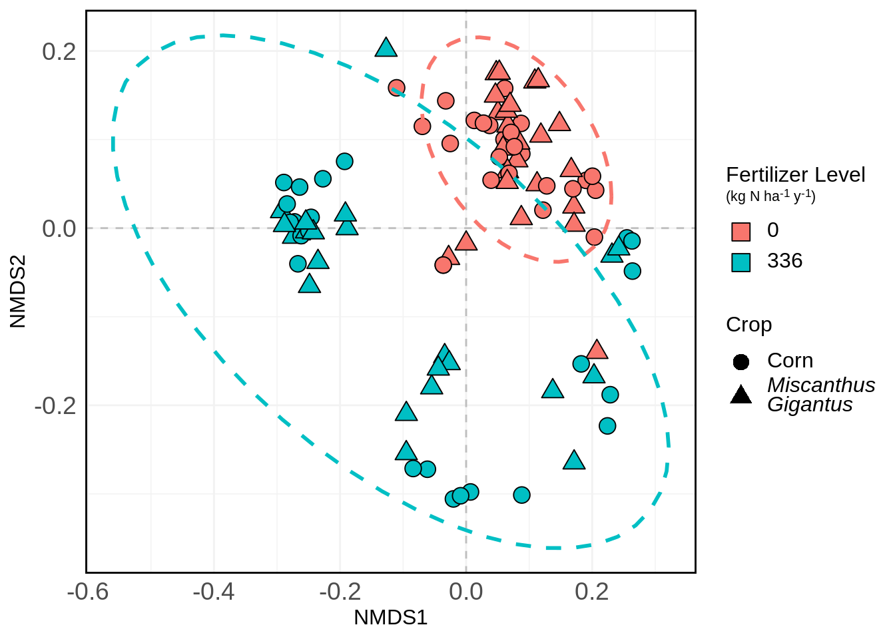
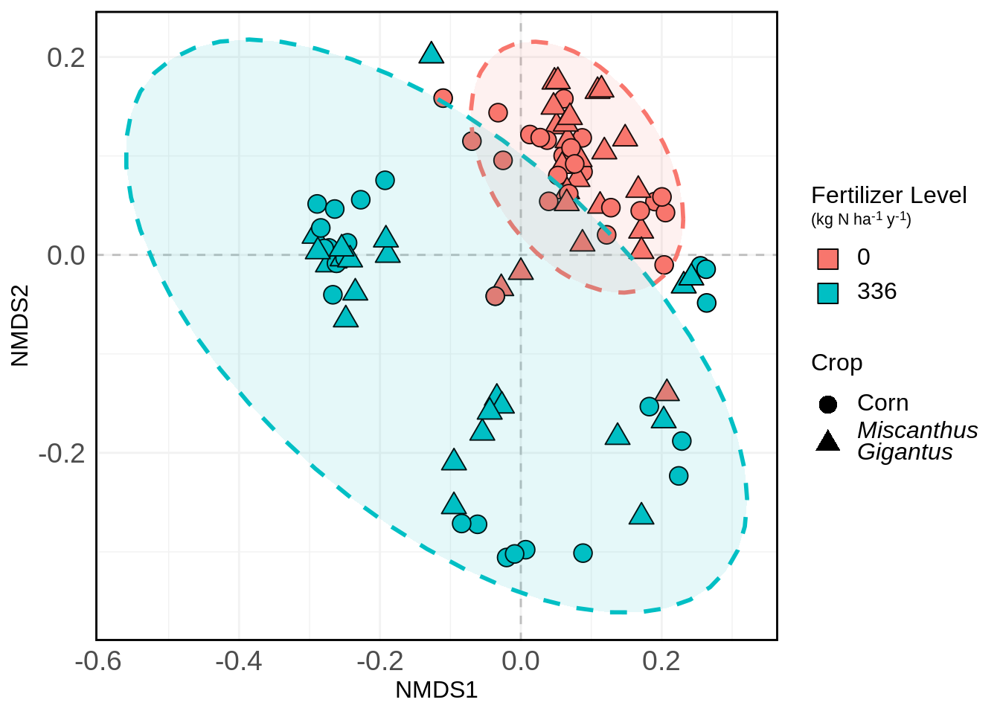
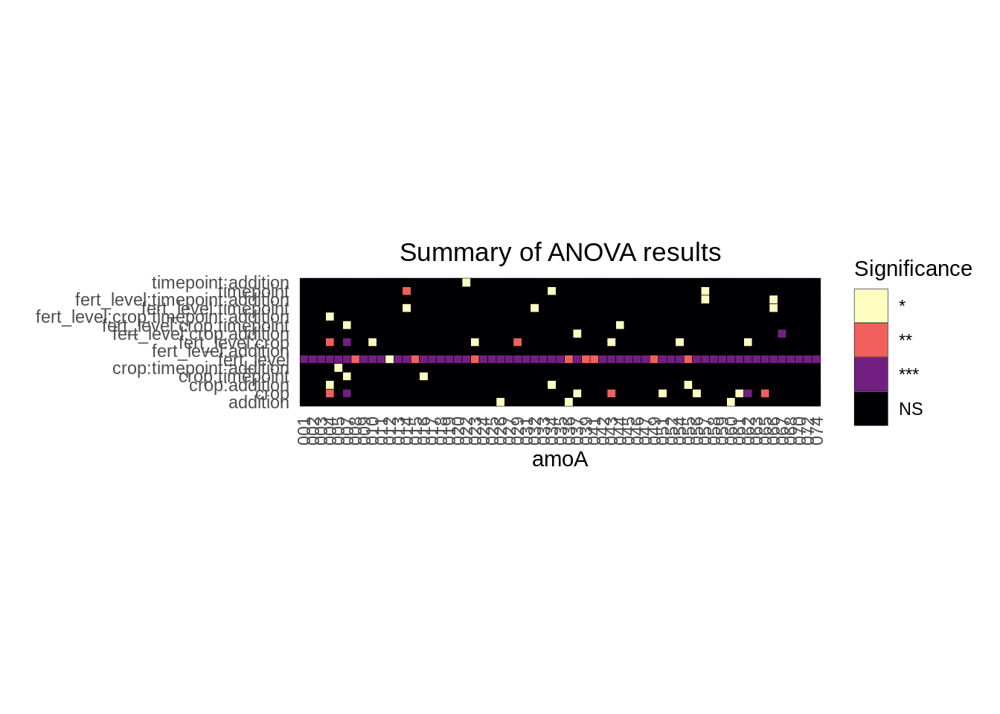
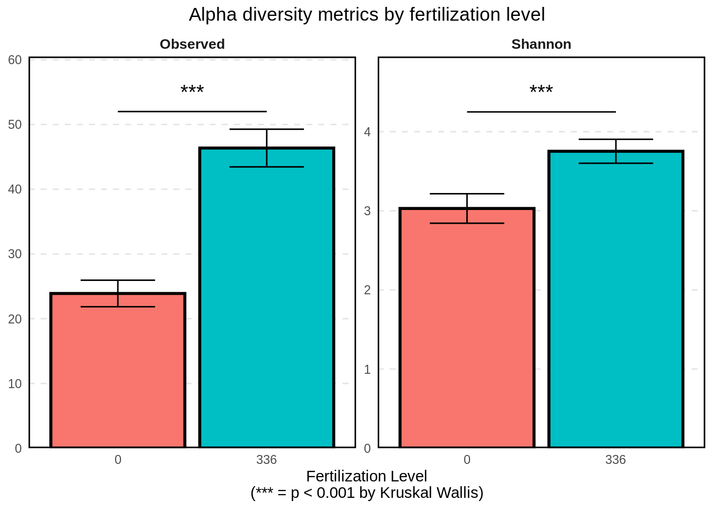
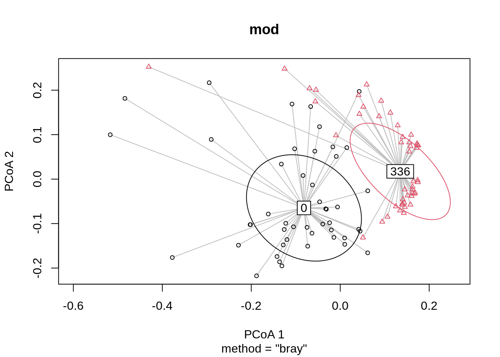
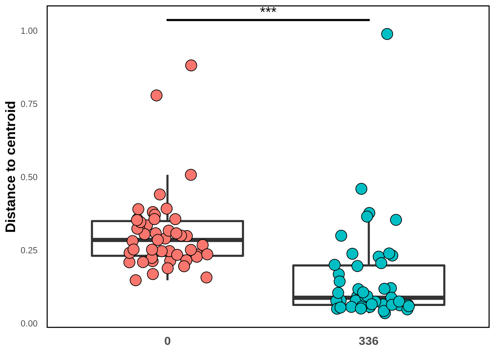
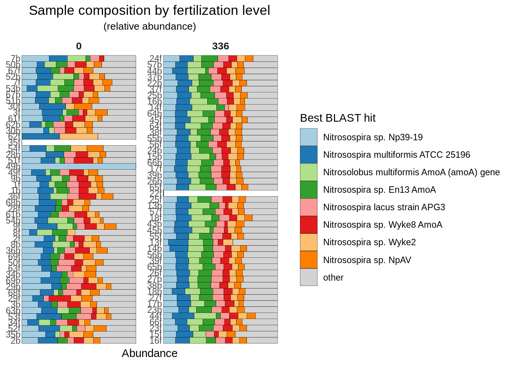
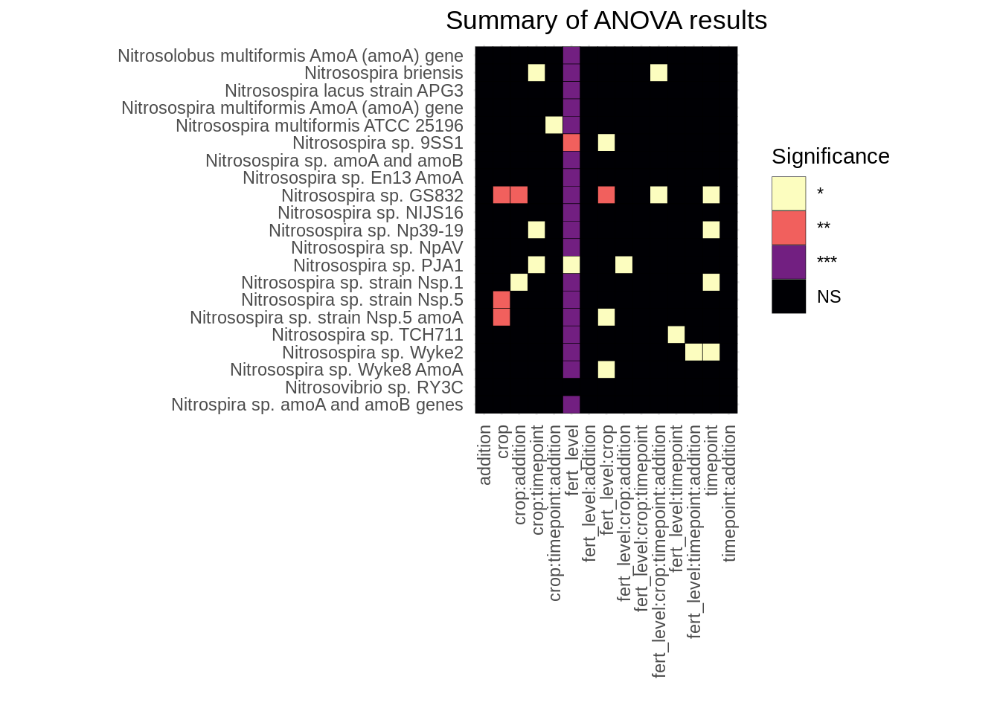

library(vegan)
library(ggplot2)
library(here)
library(tidyverse)
library(microViz)
library(phyloseq)
library(ggtext)
theme_set(theme_minimal())Analysis So Far
Data
Reading in data:
Code
data.priming <- read.csv(here("data", "priming_amoA_deltaCt.csv"), header = T) %>%
rename(sample_id = X)
data.raw <- read.csv(here("data", "priming_amoA_rawCt.csv"), header = T) %>%
rename(sample_id = X)
data.priming.long <- data.priming %>%
pivot_longer(cols = amoA.001:amoA.078, names_to = "amoA", values_to = "deltaCT")
data.raw.long <- data.raw %>%
pivot_longer(cols = amoA.001:amoA.078, names_to = "amoA", values_to = "CT")
data.priming.long$sample_id <- fct_reorder(data.priming.long$sample_id, parse_number(data.priming.long$sample_id))
df <- data.priming[, -1]
rownames(df) <- data.priming[, 1]
metadata <- df %>%
select(fert_level:field_rep) %>%
mutate(across(everything(), as.factor))
amoa_counts <- df %>%
select(starts_with("amoA"))data.priming contains the data for our experiment. There are rows for samples, columns for the delta CTs of the different amoAs, and some metadata.
data.priming[1:5, 1:5] sample_id amoA.001 amoA.002 amoA.003 amoA.004
1 2b 10.119249 27.41268 8.764504 8.992937
2 35b 9.837943 27.51089 9.300077 10.445448
3 52f 26.345485 26.34548 26.345485 26.345485
4 34f 26.914432 26.91443 26.914432 26.914432
5 16f 8.337293 25.94591 8.371314 25.945907data.raw contains the same columns but lists the raw CT values instead of the 16s-normalized ones.
data.raw[1:5, 1:5] sample_id amoA.001 amoA.002 amoA.003 amoA.004
1 2b 22.70657 40 21.35182 21.58026
2 35b 22.32706 40 21.78919 22.93456
3 52f 40.00000 40 40.00000 40.00000
4 34f 40.00000 40 40.00000 40.00000
5 16f 22.39139 40 22.42541 40.00000THe long versions of these dataframes contains the same info but in long format to play nicely with ggplot.
Removing amoAs
We’ll start by removing those amoAs from our data that are not present in over 30 samples across both treatments.
We’ll first start by counting the non-detects for each amoA.
non_detect_counts <- data.raw.long %>%
group_by(fert_level, amoA) %>%
count(CT == 40) %>%
rename(non_detect = `CT == 40`) %>%
filter(non_detect == TRUE)Finding the amoAs that are not detected in > 30 across both samples
removes <- non_detect_counts %>%
pivot_wider(names_from = fert_level, values_from = n, names_prefix = "fert.") %>%
filter(fert.0 > 30 & fert.336 > 30) %>%
pivot_longer(cols = fert.0:fert.336, names_to = "fert_level", values_to = "n")We’ll now reduce data.priming by removing those amoAs that are largely non-detects. We’ll also update the long version while we’re at it
data.priming.reduced <- data.priming %>%
select(-one_of(removes$amoA))
data.priming.reduced.long <- data.priming.reduced %>%
select(-sample_id, field_rep) %>%
pivot_longer(cols = amoA.001:amoA.074) Here’s a barchart of what we’re removing:
removes %>%
mutate(amoA = str_sub(amoA, -3)) %>%
mutate(favored = case_when(
amoA %in% c("006", "038", "064", "069", "071") ~ "Nothing",
amoA %in% c("021", "028", "030", "048", "073", "075", "076", "077", "078") ~ "Non-fertilized",
amoA %in% c("040", "050", "053") ~ "Fourth quadrant",
TRUE ~ "First quadrant"
)) %>%
mutate(fert_level = str_sub(fert_level, start = 6)) %>%
ggplot(aes(amoA, n, fill = favored )) +
geom_col() +
facet_wrap(~ fert_level) +
theme(
plot.title = element_text(hjust = 0.5),
legend.text = element_markdown(size = 12),
legend.title = element_markdown(size = 12, hjust = 0),
strip.background = element_rect(size = 1, color = "black", fill = "NA"),
panel.grid = element_line(color = "gray95"),
panel.grid.major.y = element_blank(),
panel.grid.minor.y = element_blank(),
panel.grid.minor.x = element_blank(),
panel.border = element_rect(color = "black", size = 1, fill = NA)
) +
scale_fill_viridis_d(begin = 0, end = 0.5) +
scale_y_continuous(limits = c(0, 50), expand = expansion(add = c(0, 0))) +
scale_x_discrete(limits = rev) +
coord_flip() +
labs(
y = "Number of samples with > 30 non-detects",
title = "Fertilizer level",
fill = "Favored by..."
)
Note that most of the non-detects that we’re removing are from the non-fertilized group.
Next, we’ll convert the CT values to presence/absence for use later on.
amoA_presence_absence <- data.raw %>%
select(sample_id, starts_with("amoA")) %>%
select(-one_of(removes$amoA)) %>%
mutate(across(starts_with("amoA"), ~ ifelse(.x == 40, 0, 1))) Ordination
Calculating the NMDS (positioning the sites):
mds.priming = metaMDS(data.priming.reduced %>% select(amoA.001:amoA.074), distance = "bray", k = 3)
site.scores <- as.data.frame(scores(mds.priming, display = "sites")) %>%
mutate(sample_id = data.priming.reduced$sample_id,
Crop = data.priming.reduced$crop,
Fert_Level = as.factor(data.priming.reduced$fert_level),
Day = as.factor(data.priming.reduced$doe),
Substrate_Addition = as.factor(data.priming.reduced$addition))This is enough to plot the NMDS:
nmds.plot <- site.scores %>%
ggplot(aes(NMDS1, NMDS2, fill = Fert_Level)) +
geom_hline(yintercept = 0.0,
colour = "grey",
lty = 2) +
geom_vline(xintercept = 0.0,
colour = "grey",
lty = 2) +
geom_point(aes(shape = Crop), size = 4) +
theme(
plot.title = element_text(hjust = 0.5),
legend.text = element_markdown(size = 12),
legend.title = element_markdown(size = 12, hjust = 0),
axis.text.x = element_text(size = 14),
axis.text.y = element_text(size = 14),
axis.title.x = element_text(size = 12),
axis.title.y = element_text(size = 12),
panel.grid = element_line(color = "gray95"),
panel.border = element_rect(color = "black", size = 1, fill = NA)
) +
scale_fill_discrete(name = "Fertilizer Level<br>
<span style = 'font-size:8pt;'>
(kg N ha<sup>-1</sup> y<sup>-1</sup>)
</span>") +
scale_shape_manual(labels = c("Corn", "*Miscanthus<br>Gigantus*"),
values = c(21, 24)) +
guides(
fill = guide_legend(override.aes = list(shape = 22, size = 5)),
shape = guide_legend(title = "Crop", override.aes = list(shape = c(16, 17)))
) We can also add ellipses to it if you’re interested in that:
nmds.plot +
stat_ellipse(aes(color = Fert_Level), size = 1, linetype = "dashed", show.legend = FALSE) 
And again with shading:
nmds.plot +
stat_ellipse(aes(color = Fert_Level), size = 1, linetype = "dashed", show.legend = FALSE) +
stat_ellipse(aes(fill = Fert_Level), size = 1, linetype = "dashed", show.legend = FALSE, geom = "polygon", alpha = 0.1) 
Statistics
Which factors have an impact on overall community composition?
X <- data.priming.reduced %>%
select(-c(amoA.001:amoA.074))
Y <- data.priming.reduced %>%
select(c(amoA.001:amoA.074))
adonis(Y ~ X$fert_level + X$addition + X$crop + X$timepoint)
Call:
adonis(formula = Y ~ X$fert_level + X$addition + X$crop + X$timepoint)
Permutation: free
Number of permutations: 999
Terms added sequentially (first to last)
Df SumsOfSqs MeanSqs F.Model R2 Pr(>F)
X$fert_level 1 1.4426 1.44255 56.092 0.37093 0.001 ***
X$addition 2 0.0327 0.01633 0.635 0.00840 0.673
X$crop 1 0.0882 0.08823 3.431 0.02269 0.035 *
X$timepoint 1 0.0367 0.03671 1.427 0.00944 0.225
Residuals 89 2.2889 0.02572 0.58855
Total 94 3.8890 1.00000
---
Signif. codes: 0 '***' 0.001 '**' 0.01 '*' 0.05 '.' 0.1 ' ' 1This tells us that fertilization level is very significant and explains ~37% of the variation in our samples. Crop is also a significant factor on community composition, though it only explains 2.3% of the variation.
How do the treatment factors affect the “abundance” of genes on an individual level?
All the code below does is perform an ANOVA of the gene’s abundance against all the terms and all of their interactions.
formulae <- lapply(colnames(data.priming.reduced %>% select(amoA.001:amoA.074)), function(x) as.formula(paste0(x, " ~ fert_level * crop * timepoint * addition")))
res <- lapply(formulae, function(x) broom::tidy(aov(x, data = data.priming.reduced)))
names(res) <- format(formulae)
names(res) <- str_sub(names(res), end = 8)
anova_results <- lapply(seq_along(res), function(i) res[[i]] %>% mutate(gene = names(res)[[i]])) %>%
bind_rows() %>%
filter(term != "Residuals") %>%
mutate(sig = case_when(
p.value < 0.05 & p.value > 0.01 ~ "*",
p.value < 0.01 & p.value > 0.001 ~ "**",
p.value < 0.001 ~ "***",
TRUE ~ "NS"
))Visualization:
anova_results %>%
mutate(gene = str_sub(gene, -3)) %>%
ggplot(aes(gene, term, fill = sig)) +
geom_tile(color = "black") +
coord_equal() +
labs(y = "",
x = "amoA",
title = "Summary of ANOVA results",
fill = "Significance ") +
theme(
plot.title = element_text(hjust = 0.5),
axis.text.x = element_text(angle = 90, hjust = 0, vjust = 0.5)
) +
scale_fill_viridis_d(option = "magma", direction = -1)
Overall, we see that, again, fertilization level has a significant impact on abundance levels of the individual genes, and it’s not even really that close.. There are other factors that might be worth investigating on a gene-by-gene basis, too, but that’s for later.
Biodiversity
Let’s start by visualizing the presence/absence table:
amoA_presence_absence %>%
pivot_longer(cols = amoA.001:amoA.074, names_to = "amoA", values_to = "presence") %>%
mutate(amoA = str_sub(amoA, -3),
presence = as.factor(presence)) %>%
left_join(metadata %>% rownames_to_column(var = "sample_id")) %>%
ggplot(aes(sample_id, amoA, fill = presence)) +
geom_tile(color = "black") +
labs(
x = "",
y = "",
fill = "Species is...",
title = "Presence/absence of species in crop priming samples",
subtitle = "(separated by fertilization level)"
) +
scale_fill_viridis_d(labels = c("Absent", "Present"),
begin = 0, end = 1,
option = "magma") +
theme(
axis.text.x = element_blank(),
plot.title = element_text(hjust = 0.5),
plot.subtitle = element_text(hjust = 0.5),
strip.text = element_text(size = 10, face = "bold")
) +
scale_y_discrete(limits = rev) +
facet_wrap(~ fert_level, scales = "free")Joining, by = "sample_id"
Reading in the best BLAST hit info:
amoA_organism_info <- readxl::read_xlsx(here("data", "amoa_mfp_qpcr_org_accessions.xlsx"), sheet = 5) %>%
select(-c(contains(c("forward", "reverse", "notes")))) Counts of best BLAST hits:
amoA_organism_info %>%
count(best_blast_hits, sort = TRUE) # A tibble: 25 x 2
best_blast_hits n
<chr> <int>
1 Nitrosolobus multiformis AmoA (amoA) gene 10
2 Nitrosospira sp. En13 AmoA 9
3 Nitrosospira multiformis ATCC 25196 7
4 Nitrosospira sp. Wyke8 AmoA 7
5 Nitrosospira lacus strain APG3 6
6 Nitrosospira sp. Np39-19 6
7 Nitrosospira sp. Wyke2 4
8 Nitrosospira sp. NpAV 3
9 Nitrosomonas sp. JL21 2
10 Nitrosospira briensis 2
# … with 15 more rowsCreating a phyloseq object
amoa_tax_table <- amoA_organism_info %>%
select(array_name, best_blast_hits) %>%
column_to_rownames(var = "array_name") %>%
tax_table()
rownames(amoa_tax_table) <- amoA_organism_info$array_nameps <- phyloseq(
otu_table(amoA_presence_absence %>% column_to_rownames(var = "sample_id"), taxa_are_rows = FALSE),
sample_data(metadata),
amoa_tax_table
)Richness analysis
How does observed richness and evenness change with treatment level? This is a modified diversity function that does a bunch of nice stuff that phyloseq::estimate_richness doesn’t do.
Code
estimate_richness_mod <- function(physeq, split=TRUE, measures=NULL){
if( !split ){
OTU <- taxa_sums(physeq)
} else if( split ){
OTU <- as(otu_table(physeq), "matrix")
if( taxa_are_rows(physeq) ){ OTU <- t(OTU) }
}
renamevec = c("Observed", "Chao1", "ACE", "Shannon", "Pielou", "Simpson", "InvSimpson", "SimpsonE", "Fisher")
names(renamevec) <- c("S.obs", "S.chao1", "S.ACE", "shannon", "pielou", "simpson", "invsimpson", "simpsone", "fisher")
if( is.null(measures) ){
measures = as.character(renamevec)
}
if( any(measures %in% names(renamevec)) ){
measures[measures %in% names(renamevec)] <- renamevec[names(renamevec) %in% measures]
}
if( !any(measures %in% renamevec) ){
stop("None of the `measures` you provided are supported. Try default `NULL` instead.")
}
outlist = vector("list")
estimRmeas = c("Chao1", "Observed", "ACE")
if( any(estimRmeas %in% measures) ){
outlist <- c(outlist, list(t(data.frame(estimateR(OTU)))))
}
if( "Shannon" %in% measures ){
outlist <- c(outlist, list(shannon = diversity(OTU, index="shannon")))
}
if( "Pielou" %in% measures){
#print("Starting Pielou")
outlist <- c(outlist, list(pielou = diversity(OTU, index = "shannon")/log(estimateR(OTU)["S.obs",])))
}
if( "Simpson" %in% measures ){
outlist <- c(outlist, list(simpson = diversity(OTU, index="simpson")))
}
if( "InvSimpson" %in% measures ){
outlist <- c(outlist, list(invsimpson = diversity(OTU, index="invsimpson")))
}
if( "SimpsonE" %in% measures ){
outlist <- c(outlist, list(simpsone = diversity(OTU, index="invsimpson")/estimateR(OTU)["S.obs",]))
}
if( "Fisher" %in% measures ){
fisher = tryCatch(fisher.alpha(OTU, se=TRUE),
warning=function(w){
warning("phyloseq::estimate_richness: Warning in fisher.alpha(). See `?fisher.fit` or ?`fisher.alpha`. Treat fisher results with caution")
suppressWarnings(fisher.alpha(OTU, se=TRUE)[, c("alpha", "se")])
}
)
if(!is.null(dim(fisher))){
colnames(fisher)[1:2] <- c("Fisher", "se.fisher")
outlist <- c(outlist, list(fisher))
} else {
outlist <- c(outlist, Fisher=list(fisher))
}
}
out = do.call("cbind", outlist)
namechange = intersect(colnames(out), names(renamevec))
colnames(out)[colnames(out) %in% namechange] <- renamevec[namechange]
colkeep = sapply(paste0("(se\\.){0,}", measures), grep, colnames(out), ignore.case=TRUE)
out = out[, sort(unique(unlist(colkeep))), drop=FALSE]
out <- as.data.frame(out)
return(out)
}metrics <- c("Observed", "Shannon")
richness <- estimate_richness_mod(ps, measures = metrics) %>%
rownames_to_column(var = "sample_id") %>%
mutate(sample_id = str_sub(sample_id, start = 2)) richness <- left_join(sample_data(ps) %>% data.frame() %>% rownames_to_column(var = "sample_id"), richness) %>%
pivot_longer(cols = Observed:Shannon, names_to = "Metric", values_to = "Value")Joining, by = "sample_id"Statistical tests
Significance test of fertilization level on richness.
(sig_rich_fert <- kruskal.test(Value ~ fert_level, data = richness %>% filter(Metric == "Observed")))
Kruskal-Wallis rank sum test
data: Value by fert_level
Kruskal-Wallis chi-squared = 54.275, df = 1, p-value = 1.743e-13The p-value < 0.001 gives us strong statistical evidence that richness is significantly different between fertilization treatment groups.
Significance test of fertilization level on richness
(sig_even_fert <- kruskal.test(Value ~ fert_level, data = richness %>% filter(Metric == "Shannon")))
Kruskal-Wallis rank sum test
data: Value by fert_level
Kruskal-Wallis chi-squared = 54.331, df = 1, p-value = 1.694e-13The p-value < 0.001 gives us strong statistical evidence that Shannon diversity is significantly different between fertilization treatment groups.
Making nice plots for stat differences
Standard deviations, mean
summaries <- richness %>%
group_by(Metric, fert_level) %>%
summarize(mean_val = mean(Value),
sd_val = sd(Value) / 4,
.groups = "drop") this_annotation <- data.frame(
Metric = c("Observed", "Shannon"),
lab = c("***", "***"),
x = 1.5,
y = c(50 + 5, 4 + 0.5),
lineheights = c(50 + 2, 4 + 0.25)
)
summaries %>%
ggplot(aes(fert_level, mean_val, fill = fert_level)) +
geom_col(color = "black", size = 1) +
facet_wrap(~ Metric, scales = "free_y") +
theme(
legend.position = "none",
strip.background = element_blank(),
axis.title.y = element_blank(),
strip.placement = "outside",
plot.title = element_text(hjust = 0.5),
strip.text.y = element_text(face = "bold", size = 10),
strip.text = element_text(face = "bold", size = 10),
panel.grid.major.x = element_blank(),
panel.grid.minor.x = element_blank(),
panel.grid.minor.y = element_blank(),
panel.grid.major.y = element_line(color = "gray90", linetype = "dashed"),
axis.ticks = element_blank(),
panel.border = element_rect(color = "black", size = 1, fill = "NA")
) +
scale_y_continuous(expand = expansion(mult = c(0, 0.1))) +
geom_errorbar(aes(ymin = mean_val - sd_val, ymax = mean_val + sd_val, width = 0.5)) +
geom_text(
data = this_annotation,
aes(x = x, y = y, label = lab),
inherit.aes = FALSE,
size = 5
) +
geom_segment(data = this_annotation,
aes(x = 1,
xend = 2,
y = lineheights,
yend = lineheights),
inherit.aes = FALSE) +
labs(
x = "Fertilization Level\n(*** = p < 0.001 by Kruskal Wallis)",
title = "Alpha diversity metrics by fertilization level"
)
Beta diversity
We’ll start beta diversity analysis off by doing an ADONIS/PERMANOVA to determine if treatment centroids/treatment variations are different between groups.
dis <- vegdist(otu_table(ps))Warning in vegdist(otu_table(ps)): you have empty rows: their dissimilarities
may be meaningless in method "bray"Warning in vegdist(otu_table(ps)): missing values in resultsgroups <- sample_data(ps)$fert_level
mod <- betadisper(dis, groups)missing observations due to 'd' removedanova(mod)Analysis of Variance Table
Response: Distances
Df Sum Sq Mean Sq F value Pr(>F)
Groups 1 0.57864 0.57864 26.104 1.745e-06 ***
Residuals 92 2.03937 0.02217
---
Signif. codes: 0 '***' 0.001 '**' 0.01 '*' 0.05 '.' 0.1 ' ' 1Since p <<<< 0.0001, there is strong evidence that the overall community compositions are significantly different (treatment centroid, distance to centroid, community variation) between the two groups. W can visualize this with a 1 SD ellipse:
plot(mod, ellipse = TRUE, hull = FALSE) 
We see that there is clear separation between the two treatment centroids. Let’s do some more analysis on the distance-to-centroids that we’re seeing:
betadistances <- data.frame(
time_frame = mod$group,
distance = mod$distances
)
betadistances %>%
ggplot(aes(time_frame, distance)) +
geom_boxplot(size = 1, outlier.shape = NA) +
geom_jitter(aes(fill = time_frame), size = 5, shape = 21, width = 0.2) +
theme(
legend.position = "none",
panel.grid.minor.x = element_blank(),
panel.grid.major.x = element_blank(),
panel.grid.minor.y = element_blank(),
panel.grid.major.y = element_blank(),
# panel.grid.major.y = element_line(color = "gray", linetype = "dashed"),
plot.title = element_text(size = 17),
plot.subtitle = element_text(size = 9),
axis.ticks.length = unit(0.25, "cm"),
# axis.ticks.x = element_line(color = "gray", size = 0.25),
axis.ticks.x = element_blank(),
axis.text.x = element_text(face = "bold", angle = 0, size = 12),
panel.border = element_rect(color = "black", size = 1, fill = NA),
axis.title.x = element_blank(),
axis.title.y = element_text(size = 14, face = "bold"),
# legend.position = "none"
) +
labs(
color = "",
y = "Distance to centroid"
) +
ggsignif::geom_signif(
map_signif_level = TRUE,
comparisons = list(c("0", "336")),
test = "t.test",
step_increase = 0.1,
color = "black",
size = 1,
textsize = 5,
tip_length = 0
)
The significance bar is coming from the PERMANOVA test we did above. We see that there is actually less beta diversity (as meaasured by distance-to-centroid) in the fertilized group than in the non- fertilized group. We’ll see another visualization backing this up in the next section:
Composition
Let’s visualize the composition of the communities, separated by fertilization. We’ll start with raw counts - how many times was that best BLAST hit seen in that sample?
comp_barplot(ps, "ta1",
facet_by = "fert_level",
sample_order = "default",
tax_transform_for_plot = "identity") +
coord_flip() +
labs(
title = "Sample composition by fertilization level",
subtitle = "(raw counts)"
) +
theme(
axis.text.x = element_blank(),
axis.text.y = element_text(margin = margin(r = -7)),
plot.title = element_text(hjust = 0.5),
plot.subtitle = element_text(hjust = 0.5, size = 10),
strip.text = element_text(size = 10, face = "bold")
) +
guides(
fill = guide_legend(title = "Best BLAST hit", reverse = TRUE)
)
We see that overall the fertilized group appears to have more richness in it.
How about sample composition? IE, relative abundances?
comp_barplot(ps, "ta1",
facet_by = "fert_level",
sample_order = "default") +
coord_flip() +
labs(
title = "Sample composition by fertilization level",
subtitle = "(relative abundance)"
) +
theme(
axis.text.x = element_blank(),
axis.text.y = element_text(margin = margin(r = -7)),
plot.title = element_text(hjust = 0.5),
plot.subtitle = element_text(hjust = 0.5, size = 10),
strip.text = element_text(size = 10, face = "bold")
) +
guides(
fill = guide_legend(title = "Best BLAST hit", reverse = TRUE)
)
Two big things pop out:
- species distribution is more even in the fertilized group. This makes sense given previous results showing that Shannon entropy is higher and beta diversity is lower in the fertilized group. You can also see that the communities just look more like each other in the fertilized group, which manifests in shorter distance-to-centroids/lower community variation.
- There’s more green in the fertilized group.
Statistics on a best BLAST hit level
The next chunk is just doing some data transformation stuff to count the number of times each organism was seen in each sample in preparation for the statistical analysis.
pa_count <- ps %>%
otu_table() %>%
data.frame %>%
rownames_to_column(var = "sample_id") %>%
pivot_longer(amoA.001:amoA.074)
org_table <- tax_table(ps) %>%
data.frame %>%
rownames_to_column(var = "name") %>%
rename(bbh = ta1) %>%
mutate(cleaned_names = janitor::make_clean_names(bbh))
bbh_sample_counts <- left_join(pa_count, org_table, by = "name") %>%
group_by(sample_id, bbh) %>%
summarize(value = sum(value)) %>%
pivot_wider(names_from = "bbh", values_from = value)`summarise()` has grouped output by 'sample_id'. You can override using the `.groups` argument.bbh_level_counts <- left_join(bbh_sample_counts,
sample_data(ps) %>%
data.frame %>%
rownames_to_column(var = 'sample_id') %>%
right_join(bbh_sample_counts)
) %>%
ungroup()Joining, by = "sample_id"Joining, by = c("sample_id", "Nitrosolobus multiformis AmoA (amoA) gene", "Nitrosospira briensis", "Nitrosospira lacus strain APG3", "Nitrosospira multiformis AmoA (amoA) gene", "Nitrosospira multiformis ATCC 25196", "Nitrosospira sp. 9SS1", "Nitrosospira sp. amoA and amoB", "Nitrosospira sp. En13 AmoA", "Nitrosospira sp. GS832", "Nitrosospira sp. NIJS16", "Nitrosospira sp. Np39-19", "Nitrosospira sp. NpAV", "Nitrosospira sp. PJA1", "Nitrosospira sp. strain Nsp.1", "Nitrosospira sp. strain Nsp.5", "Nitrosospira sp. strain Nsp.5 amoA", "Nitrosospira sp. TCH711", "Nitrosospira sp. Wyke2", "Nitrosospira sp. Wyke8 AmoA", "Nitrosovibrio sp. RY3C", "Nitrospira sp. amoA and amoB genes")bbh_level_counts %>%
pivot_longer(cols = 2:22) # A tibble: 1,995 x 9
sample_id fert_level crop timepoint doe addition field_rep name value
<chr> <fct> <fct> <fct> <fct> <fct> <fct> <chr> <dbl>
1 13b 336 corn b 5 control 1 Nitrosol… 6
2 13b 336 corn b 5 control 1 Nitrosos… 1
3 13b 336 corn b 5 control 1 Nitrosos… 2
4 13b 336 corn b 5 control 1 Nitrosos… 1
5 13b 336 corn b 5 control 1 Nitrosos… 5
6 13b 336 corn b 5 control 1 Nitrosos… 1
7 13b 336 corn b 5 control 1 Nitrosos… 1
8 13b 336 corn b 5 control 1 Nitrosos… 3
9 13b 336 corn b 5 control 1 Nitrosos… 0
10 13b 336 corn b 5 control 1 Nitrosos… 1
# … with 1,985 more rowsHere, we’re preparing formulas to feed to a lapply function to perform a Kruskal-Wallis test on all of the organisms.
formulae <- lapply(colnames(bbh_sample_counts %>% select(-sample_id) %>% janitor::clean_names()) , function(x) as.formula(paste0(x, " ~ fert_level * crop * timepoint * addition")))Adding missing grouping variables: `sample_id`formulae[[1]] <- NULL
res <- lapply(formulae, function(x) broom::tidy(aov(x, data = bbh_level_counts %>% janitor::clean_names())))
names(res) <- format(formulae)
names(res) <- lapply(names(res), function(x) str_split(x, "~")[[1]][1]) %>% unlist()
anova_results.counts <- lapply(seq_along(res), function(i) res[[i]] %>% mutate(gene = names(res)[[i]])) %>%
bind_rows() %>%
filter(term != "Residuals") %>%
mutate(gene = str_trim(gene))Visualizing the results again:
anova_results.counts %>%
left_join(org_table, by = c("gene" ="cleaned_names")) %>%
mutate(sig = case_when(
p.value < 0.05 & p.value > 0.01 ~ "*",
p.value < 0.01 & p.value > 0.001 ~ "**",
p.value < 0.001 ~ "***",
TRUE ~ "NS"
)) %>%
ggplot(aes(term, bbh, fill = sig)) +
geom_tile(color = "black") +
labs(y = "",
x = "",
title = "Summary of ANOVA results",
fill = "Significance ") +
theme(
plot.title = element_text(hjust = 0.5),
axis.text.x = element_text(angle = 90, hjust = 1, vjust = 0.5),
axis.text.y = element_text()
) +
scale_fill_viridis_d(option = "magma", direction = -1) +
scale_y_discrete(limits = rev) +
coord_equal() 
We see the same pattern at the organism level as when we did this at the gene level: fertilization level is by far the most significant factor affecting Presence/Absence of organisms.